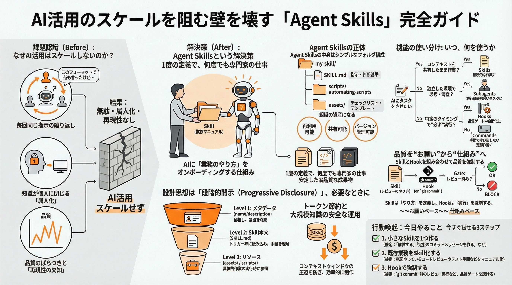

Agent Skills
AIを「指示する」から「育てる」時代へ
2025年12月18日にオープンスタンダードとして公開された「Agent Skills」は、AIに特定の業務マニュアルと専用工具をインストールし、再利用可能にする画期的な仕組みです。
AIエージェントの能力拡張と標準化
💡 Agent Skillsの核心概念
- 1 形式知化された「仕事術」: SKILL.md(マニュアル)とscripts(ツール)により、プロのノウハウをAIにインストール。
- 2 圧倒的な効率性: 段階的開示設計により、コンテキスト消費を最大98.7%削減。大規模な自動化を経済的に実現。
- 3 オープンスタンダード: Claudeだけでなく、GitHub Copilotや各種ツール間で「スキル」を共有・再利用可能。
推論空間の制御
- プロンプト職人から工学的制御へ
- 組織のワークフローへの確実な誘導
- 非エンジニアでもAIの振る舞いを管理可能
実用的な自動化
- ブランド準拠の資料自動作成
- パートナーSkills(Notion, Figma等)との連携
- TDDなどの開発プロセスの標準化